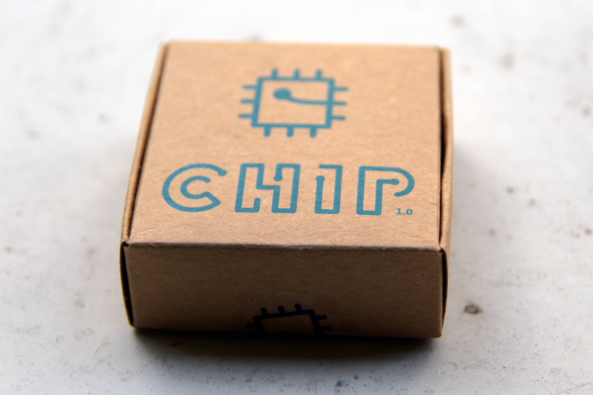
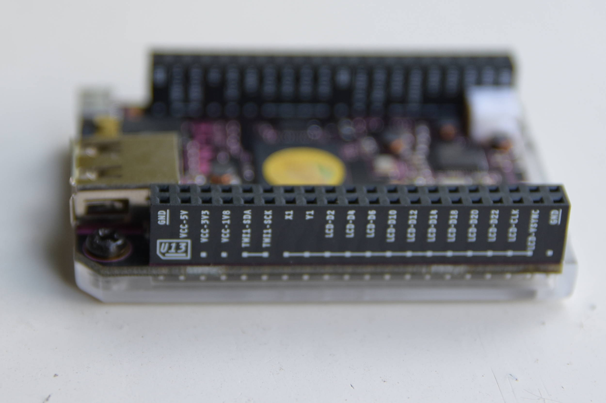

Warning — thinking and opinion building in progress: This is a quick&dirty post about my first thoughts about NextThing C.h.i.p. Consider it as a first draft — I am going to modify this post in the next weeks and correct typos.
 My thoughts about NextThing C.h.i.p. v. 1.0:
From ordering to delivery¶
I know I have been lucky to recieve my Chip already (further information) because I preordered before 31st of January Later pre-orders are delayed.
NextThing Co. promised me a 9 Dollar Computer — NextThing delievered as promised!
I ordered this small $9 computer in January and agreed to pay additional $6.22 for international shipping. In June NextThing asked me to confirm my shipping address and told me:
Pre-orders have begun shipping and will continue through mid-July. Once you have confirmed, you will be in the shipping queue.
…and then after adress confirmation in another email from NextThing in mid July:
That’s right! It has officially left the building … rather our shipping facility in Hong Kong. Either way it’s on its way straight away!
NextThing also provided a tracking number. I recieved my C.h.i.p. last week. As far as I can tell right now everything went smooth with my order and NextThing delievered as they promised!
…but now to the important questions: Does it come with batteries included and with a fair amount of fairy dust? Is it enchanted and encoated by pixies? Is it the holy grail of singleboard computers?
Thoughts and opinion¶
Let us just think how incredible this tiny computer is and how much you get for your $9! With this price tag it is an absolute no-brainer and you should definitely get one — but it appears you will have to wait till fall. Here are some reasons why I am quite excited about NextThings C.h.i.p.;
-
full root access — this reminds me of a paragraph in Eric S. Raymonds famous FAQ “How to become a Hacker” (which is absolutely not about breaking into computers of other people!):
“I’ll assume you have a personal computer or can get access to one. (Take a moment to appreciate how much that means. The hacker culture originally evolved back when computers were so expensive that individuals could not own them.) The single most important step any newbie can take toward acquiring hacker skills is to get a copy of Linux or one of the BSD-Unixes, install it on a personal machine, and run it.” — Read all of the mentioned FAQ here. …and again a paragraph about Linux of Eric S. Raymonds FAQ: “Learn it. Run it. Tinker with it. Talk to the Internet with it. Read the code. Modify the code. You’ll get better programming tools (including C, LISP, Python, and Perl) than any Microsoft operating system can dream of hosting, you’ll have fun, and you’ll soak up more knowledge than you realize you’re learning until you look back on it as a master hacker.”
-
built in wifi — no need for an external dongle, no reading of documentation and tutorials how to set up a wifi-dongle.
- built in bluetooth
- built in 4 GB of NAND storage — no need to buy a storage medium because Chip works out of the box. You may want to use an additional memory stick to get more storage capacity later on.
- 512 MB ram — I think it is good enough.
- preflashed with the Chip OS based on Debian — Chip works out of the box. No need to download, verify, extract and finally
ddthe iso-image to a storage medium… - one Usb-port
- female pins — ready for easy connection with standard male pin headers 
- battery support — using chip with a battery seems easy, but I have not tried it yet.
Verdict: Chip is a perfect headless single board computer to hack, make and embed into projects. It is unexpensive. It can be a useful device in educational projects or in developing countries. A perfect gift for children and young adults. Chip could be a good computer for Joe Average Hacker, his children and his aunt Tillie. To reach $9 NextThing compromised on the video output (no vga, no hdmi, read about the reasons for this decision here). Usability out of the box is very high.
If you have any questions, suggestions, thoughts and comments please feel free to email me.
License of this blog post (Note that I don’t created the chip rainbow image and use it under ‘fair-use terms’ for this post — In case of doubt, don’t reuse that image):

This work is licensed under a Creative Commons Attribution-ShareAlike 4.0 International License.